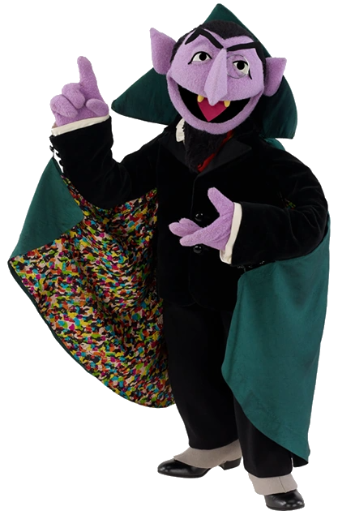

"AH-AH-AH-AH!"
-Count von Count
Count von Count is a fictional mysterious but friendly vampire-like Muppet on the long-running PBS/HBO children's television show Sesame Street who is meant to parody Bela Lugosi's portrayal of Count Dracula. He first appeared on the show in the Season 4 premiere in 1972, counting blocks in a sketch with Bert and Ernie.